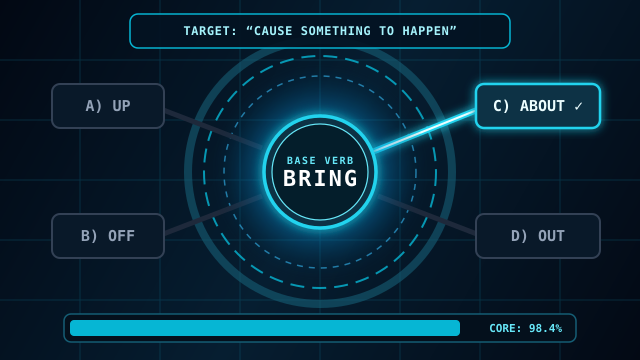
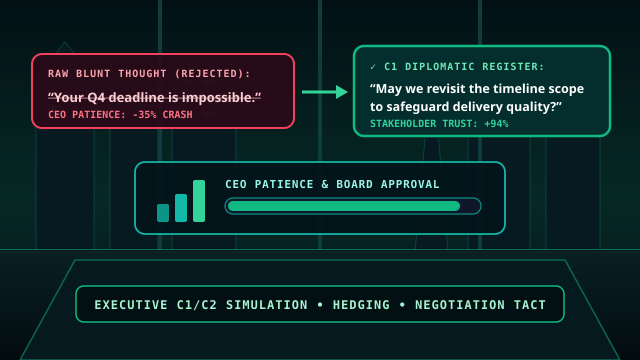
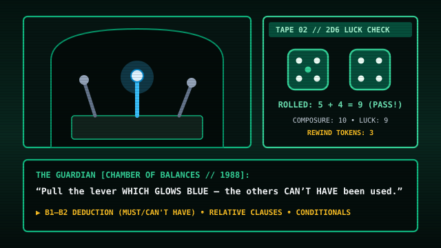
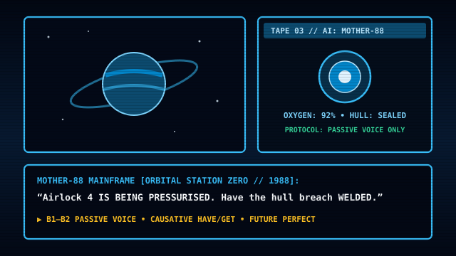

Intensive IELTS 7.0+ Study Plan
A structured roadmap focusing on Writing Task 2 and Speaking Part 3, with practical homework tasks.
Interactive practice games, exam modules, and courses for Cambridge C1/C2 and IELTS, built by me for my own students.
Why I built these: Across 18 years of teaching—15 of them lecturing at Belfast Metropolitan College—and coaching private students for Cambridge and IELTS exams, I saw how rarely static gap-fill worksheets prepare you for thinking under real exam pressure. I built these interactive games, essay builders, and literature lessons for my own students so you can practise anytime—most of the tools here are free, alongside the full 12-lesson Dark Academia course (£24) and the Teacher Vault.

“_______ had Jonathan Harker crossed the bridge than the wolves began to howl.”
Great novelists use the exact same grammar patterns that Cambridge and IELTS examiners reward: negative inversion, participle clauses, cleft sentences, and past modal deductions. All 12 candlelit lessons are live right now—illustrated with 18th- and 19th-century oil paintings by Caspar David Friedrich, Joseph Wright of Derby, and John Atkinson Grimshaw, paired with natural British English readings and 60 tap-to-build Key Word Transformations.
Immediate digital access: at checkout you will be asked to confirm immediate delivery of the digital course materials, which waives the 14-day statutory cooling-off period (UK Digital Content Terms).
Drill C1/C2 negative inversions, phrasal verb particles, Part 3 word formation suffixes, and executive diplomacy under real exam time pressure.

Slot ancient glowing runes into 4-tier syntax vaults (Foundations, Relics, Time, Abyss). Features 3D floating embers, explicit POS slot blueprints, custom near-miss hints, and Web Audio soundtrack on by default.

Stabilise the plasma core by firing the exact phrasal verb particle into high-level context definitions before the containment timer hits zero.

Master Cambridge Reading & Use of English Part 3 by stamping root words with negative prefixes, noun endings, and adverbial suffixes on the assembly line.

Transform blunt thoughts into diplomatic C1/C2 executive English across high-stakes stakeholder meetings, client pushback, and salary negotiations.
Step beyond standard multiple choice into full narrative environments: calibrate mixed conditionals 8,000 leagues deep in the Abyssal Bathysphere, route Himalayan train telegrams in the Darjeeling Signal Box, or crack the C1 Blueprint Vault.
Sent straight to your inbox so you can revise the exact structures tested in Grammar Crypt and Phrasal Reactor.
Interactive exam practice modules built around the published Cambridge Assessment and IELTS Band 8.0+ marking criteria. Filter by your target exam below:
Recognise all 5 standard Task 2 question types in 30 seconds and build Band 8.0+ sentences interactively.
Practise 8 compound personality adjectives and conditional linkers beyond simple “if” clauses.
Build a C1 essay sentence by sentence against a 5-minute timer while ticking off advanced grammar structures.
Evaluate corporate screening arguments and practise C2 causative and impersonal passive structures.
Step-by-step exam blueprints, annotated Band 8+ / C2 model essays, and interactive lecture decks.
A structured roadmap focusing on Writing Task 2 and Speaking Part 3, with practical homework tasks.
A reliable 4-paragraph framework, band scoring breakdown, and complete sample essay with analysis.
Rule breakdowns, typical traps, and 8 exam-style key word transformations with click-to-reveal answers.
An interactive presentation built from real college lectures to sharpen exam technique and grammar.
Enter your email for instant links to the C1/C2 Negative Inversion guide, 10 Common Mistakes breakdown, and downloadable IELTS/Cambridge Study Syllabus PDF.
Zero textbook gap-fills—in CHRONICLE ’88, grammar precision is your literal survival clue. Cross-examine suspects with talking 8-bit character busts, decode cyber-vault logs, and roll 2d6 ≤ Composure against deadly hazard checks—complete with Rewind Token B2 Key Word Transformation Parries when you take damage. Built with authentic 8-color digital dithering and FM chiptune audio (on by default).
A neural chip is stolen at 23:15. Cross-examine suspects by spotting the timeline difference between Past Simple, Past Continuous, and Past Perfect alibis.

Inspect cobwebbed levers with modals of deduction (must have / can’t have), solve defining vs. non-defining mirror riddles, and parley with the Guardian.

Trapped on an orbital base where the AI mainframe MOTHER-88 only obeys exact Passive Voice diagnostics, Causative repair orders, and Future Perfect telemetry.
While my 1-to-1 private tuition is for adult learners, parents and younger learners can step inside Professor West’s 3D Study—an ad-free, no-sign-up interactive 3D room with a 4-Act animated intro movie, British storyteller voiceover, classical music, and 6 vocabulary & spelling quests hosted by Pencil the Cat.
Save hundreds of prep hours. Instant access to 35+ classroom-tested lesson packs, interactive Prezi presentations, and white-label commercial lesson plans used across 18 years at Belfast Met.
Self-paced games build sharp habits—but passing Cambridge C1/C2, hitting IELTS Band 7.5+, or preparing for high-stakes interviews is much faster with personal feedback. Book a live 30-minute trial, or send me an essay for a line-by-line Google Doc markup.